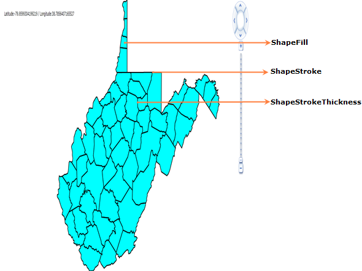
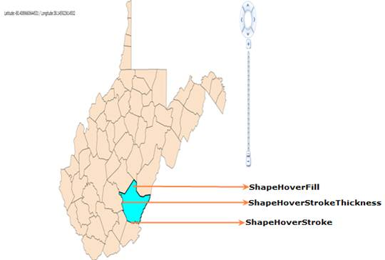

Shapes in the Map control can be customized using ShapeFill, ShapeStroke, ShapeStrokeThickness and HoverEffects.
ShapeFill, ShapeStroke, and ShapeStrokeThickness
ShapeFill property will fill the Shape with the respective color. ShapeStroke property will set the border color of the shape in the Map. And ShapeStrokeThickness property will set the thickness of the shape’s border.

Figure 21: ShapeFill, ShapeStroke and ShapeStrokeThickness
|
[XAML] <maps:MapControl x:Name="Map" EnableLayerTransitionEffects="True" ShapeFill="Aqua" ShapeStroke="Black" ShapeStrokeThickness="2" LayeredContent="{Binding ElementName=shapeControl}"> <maps:MapControl.Layers> <maps:Layers> <maps:ShapeFileLayer Uri="WpfApplication1.ShapeFiles.wv.shp" TranslateZoomFactor="1" x:Name="shapeControl" EnableColorPalette="True"> </maps:ShapeFileLayer> </maps:Layers> </maps:MapControl.Layers> </maps:MapControl> |
|
[C#] ShapeFileLayer shapeLayer = new ShapeFileLayer(); shapeLayer.Uri = "WpfApplication1.ShapeFiles.wv.shp"; shapeLayer.ShapeFill = new SolidColorBrush(Colors.LightGray); shapeLayer.ShapeStroke = new SolidColorBrush(Colors.Black); shapeLayer.ShapeStrokeThickness = 2d; |
Hover Effects
Hover effects for the shape in the Map can be set using the following Properties:
· ShapeHoverFill
· ShapeHoverStroke
· ShapeHoverStrokeThickness
· EnableShapeHoverEffects
Table 8: Hover Effects API Description
|
Application Programming Interface (API) |
Description |
|
ShapeHoverFill |
This property will fill the shape with the given color during mouse over on the shape. |
|
ShapeHoverStroke |
This property will set the border color of the shape during mouse over on the shape. |
|
ShapeHoverStrokeThickness |
This property will set the border width of the shape color during mouse over on the shape |
|
EnableShapeHoverEffects |
This property will enable or disable the Hover effects of the shape. If value is true then Hover effects will be enabled. Else it will be disabled. |

Figure 22: Shape Hover Effects
|
[XAML] <maps:MapControl x:Name="Map" EnableLayerTransitionEffects="True" ShapeHoverFill="Aqua" ShapeHoverStroke="Black" ShapeHoverStrokeThickness="2" LayeredContent="{Binding ElementName=shapeControl}"> <maps:MapControl.Layers> <maps:Layers> <maps:ShapeFileLayer Uri="WpfApplication1.ShapeFiles.wv.shp" TranslateZoomFactor="1" x:Name="shapeControl" EnableColorPalette="True"> </maps:ShapeFileLayer> </maps:Layers> </maps:MapControl.Layers> </maps:MapControl> |
|
[C#] ShapeFileLayer shapeLayer = new ShapeFileLayer(); shapeLayer.Uri = "WpfApplication1.ShapeFiles.wv.shp"; shapeLayer.ShapeHoverFill = new SolidColorBrush(Colors.LightGray); shapeLayer.ShapeHoverStroke = new SolidColorBrush(Colors.Black); shapeLayer.ShapeHoverStrokeThickness = 2d; |